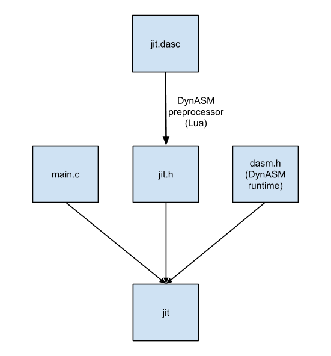

本文是个简单易懂的 JIT (即时编译器) 演示文档. "JIT" 这个词往往会让人联想到最深奥的魔法, 只有最核心的编译器开发人员才会想着去创造这种东西. JIT 会让你想到 JVM 或 .NET 这种包好数十万行代码的巨大运行时. 你永远不会看到 "Hello World!" 大小的 JIT 程序用很少的代码来写一些有趣的例子. 恭喜你中奖了, 这篇文章正准备做这个事情.
但其实 JIT 与调用 printf() 的程序并没有太大的不同, JIT 只是刚好执行机器码, 而不是输出"Hello, World!". 当然, JIT 和 JVM 一样高度复杂, 这是因为它们实现了一个复杂的, 经过优化的平台. 如果我们实现简单的逻辑, 那么我们的程序也可以更简单.
编写一个简单的 JIT, 最困难的部分是对指令进行编码, 以便目标 CPU 能够理解这些指令. 例如在x86-64上, 指令 push rbp 被编码为字节 0x55. 实现这种编码很无聊, 并且需要阅读大量的CPU手册. 所以我们将跳过这一部分. 取而代之, 我们将使用 Mike Pall 编写的非常好的库 DynASM 来处理这些编码工作. DynASM 用非常新颖的方法, 即允许将汇编代码与 JIT 的 C 代码混编, 这样就能够以非常自然和可读的方式编写 JIT. 并且它支持多种 CPU 架构 (在撰写本文时为x86,x86-64, PowerPC, MIPS和ARM), 因此不太可能受到它的硬件支持的限制. 并且 DynASM 特别小巧; 它的整个运行时只有一个500行的头文件.
我应该简要说明一下我的术语. 我将调用一个 "JIT", 即任何执行运行时生成的机器码的程序. 一些作者以一种更具体的方式描述这个术语, 并且只有当一个程序是一个混合的解释器/编译器, 可以按需以小片段的形式生成机器码时, 才认为它是JIT. 这些作者将更通用的运行时代码生成技术称为动态编译. 但 "JIT" 是更常见和更容易识别的术语, 它通常应用于各种不符合最严格 JIT 定义的方法, 比如 Berkeley Packet Filter JIT.
言归正传, 让我们进入第一个JIT. 本文的所有示例都在我的 GitHub repo jitdemo 中. 代码是针对 unix 的, 因为使用了 mmap(), 我们生成的是 x86-64 代码, 因此您需要一个支持它的处理器和操作系统. 代码经过测试在 Ubuntu Linux 和 Mac OS X 上运行良好.
在第一个例子中, 我们甚至不需要使用 DynASM, 以尽可能地简化它. 第一个程序是 jit1.c.
#include <stdio.h> #include <stdlib.h> #include <string.h> #include <sys/mman.h> int main(int argc, char *argv[]) { // Machine code for: // mov eax, 0 // ret unsigned char code[] = {0xb8, 0x00, 0x00, 0x00, 0x00, 0xc3}; if (argc < 2) { fprintf(stderr, "Usage: jit1 <integer>\n"); return 1; } // Overwrite immediate value "0" in the instruction // with the user's value. This will make our code: // mov eax, <user's value> // ret int num = atoi(argv[1]); memcpy(&code[1], &num, 4); // Allocate writable/executable memory. // Note: real programs should not map memory both writable // and executable because it is a security risk. void *mem = mmap(NULL, sizeof(code), PROT_WRITE | PROT_EXEC, MAP_ANON | MAP_PRIVATE, -1, 0); memcpy(mem, code, sizeof(code)); // The function will return the user's value. int (*func)() = mem; return func(); }
或许很难相信, 但这33行的确实现了一个合法的 JIT (性能提高了5倍). 代码动态地生成并运行一个函数, 该函数返回一个运行时指定的整数. 你可以验证一下:
$ ./jit1 42 ; echo $? 42
你会注意到, 我必须使用 mmap() 而不是 malloc()(从堆中获取内存的常规方法) 来分配内存. 这是必要的, 因为我们需要内存是可执行的, 这样我们可以在程序不崩溃的情况下跳转到分配的内存执行. 在大多数系统中, 栈和堆被配置为不允许执行, 因为如果跳转到栈或堆, 则意味着出现了非常错误的情况. 更糟糕的是, 利用缓冲区溢出的黑客, 可以用可执行堆栈更来更方便的使用漏洞. 因此, 通常我们需要避免映射任何同时具有可写和可执行权限的内存, 同样在您自己的程序中遵循这个规则也是好习惯. 这里反了以上规则只是为了让我们的第一个程序尽可能简单.
这里还通过不释放分配的内存来进一步让例子更简单. 不过稍后就会修正这一点. mmap() 有一个对应的函数 munmap()，我们可以使用它将内存释放回操作系统.
你可能想知道为什么不能调用由 malloc() 分配且更改权限的内存中的函数. 毕竟以一种完全不同的方式分配可执行内存很麻烦. 其实 mprotect() 可以改变已经申请的内存的权限, 但权限只能在页边界上设置. malloc() 会分配页中间的一些内存, 即没有完整拥有的页. 如果如果修改页面的权限, 将影响同在一个页中其他正在运行的程序的代码.
DynASM 是 LuaJIT 项目的一部分, 但它本身完全独立于 LuaJIT 代码, 可以单独使用. DynASM 由两个部分组成: 预处理程序, 将混合的 C/assembly 文件 (*.dasc) 转换为纯 C 代码. 微型运行时, 链接到 C 以完成必须延迟到运行时才能完成的工作.

这种设计很好, 因为所有解析汇编语言和编码机器码指令的复杂代码都可以用高级的, 带垃圾收集的语言(Lua)编写, 并且只在 build 时需要. 运行时没有 Lua 依赖. DynASM 的大部分代码都是用 Lua 编写的, 但运行的时候却不需要依赖 Lua.(这里实际上说的是 DynASM 的汇编器部分 (占绝大部分代码) 是用 Lua 写的, 其实只是文本翻译工作, 编译过程执行一次后, 已经翻译到目标代码, 就不需要了. 运行时会依赖一个由 C 语言编写的 runtime 程序).
对于第一个使用 DynASM 的示例, 将编写生成与上一个示例完全相同的函数的程序. 通过这种方式，我们可以比较两种方法的不同之处, 并了解 DynASM 给我们带来了什么变化.
// DynASM directives. |.arch x64 |.actionlist actions // This define affects "|" DynASM lines. "Dst" must // resolve to a dasm_State** that points to a dasm_State*. #define Dst &state int main(int argc, char *argv[]) { if (argc < 2) { fprintf(stderr, "Usage: jit1 <integer>\n"); return 1; } int num = atoi(argv[1]); dasm_State *state; initjit(&state, actions); // Generate the code. Each line appends to a buffer in // "state", but the code in this buffer is not fully linked // yet because labels can be referenced before they are // defined. // // The run-time value of C variable "num" is substituted // into the immediate value of the instruction. | mov eax, num | ret // Link the code and write it to executable memory. int (*fptr)() = jitcode(&state); // Call the JIT-ted function. int ret = fptr(); assert(num == ret); // Free the machine code. free_jitcode(fptr); return ret; }
这不是完整的程序, 一些 DynASM 初始化程序和可执行内存分配/释放被定义在 [dynasm-driver.c](https://github.com/haberman/jitdemo/blob/master/dynasm-driver.c). 这个共享的辅助代码在我们所有的例子中都是一样的, 所以我们在这里省略它, 你可以在之前提到的 repo 中找到, 并且这个代码经过很好的注释方便理解.
观察的关键差异是程序如何生成汇编指令. 我们的 .dasc 文件可以包含汇编语言, 这与在 .S 文件中编写汇编类似. 文件中以管道 (|) 符号开头的行由 DynASM 解释，行内可以包含汇编语言指令 (instructions) 或命令 (directives). 这比第一个例子强大得多. 特别要注意 mov 指令的参数是如何引用 C 变量的, DynASM 知道如何在生成指令时将该变量的值替换到指令中.
为了理解这是如何实现的, 我们可以查看处理器的输出的 jit2.h 中的重要部分 (由 jit2.dasc 生成). 文件的其余部分未经 DynASM 修改直接跳过.
//|.arch x64 //|.actionlist actions static const unsigned char actions[4] = { 184,237,195,255 }; // [...] //| mov eax, num //| ret dasm_put(Dst, 0, num);
我们可以看到我们在 .dasc 文件中编写的源代码行 (现在注释掉了) 以及由此产生的新代码行. "action list" 是由 DynASM 预处理器生成的数据缓冲区. 这些字节码将由 DynASM 运行时解释. 这里将汇编语言指令的直接编码(即汇编语言对应的平台相关的字节码), 与 DynASM 运行时链接代码, 插入运行时值等动作混合到一起. 在这种情况下，action list 中的四个字节被解释为:
然后这个操作缓冲会被其余部分的代码引用并执行其中的汇编指令. 发出指令的这些行替换为对 dasm_put() 函数的调用, 该调用在操作缓冲区中提供一个偏移量, 并将需要替换的运行时值传递到输出中 (比如 num 变量的运行时值). dasm_put() 把这些指令 (带有 num 变量的运行时值) 附加到存储在 state 中的缓冲区中 (参阅上面定义的的 #define Dst & state).
结果是我们得到了与第一个示例完全相同的效果. 但这次我们使用的方法让我们象征性地编写汇编语言. 这是一种更好的 JIT 编程方式.
我们可以把目标定位最简单的图灵完备语言 Brainf*ck (以下简称"BF"). BF 仅用 8 个命令就实现了图灵完备 (甚至包括了 I/O). 这些命令可以看作是一种字节码.
这次的例子没有比上一个复杂多少, 我们可以用 100 行以内的 C 语言 ( 不包括我们大约 70 行的共享驱动文件) 为 BF 实现一个全功能 JIT:
#include <stdint.h> |.arch x64 |.actionlist actions | |// Use rbx as our cell pointer. |// Since rbx is a callee-save register, it will be preserved |// across our calls to getchar and putchar. |.define PTR, rbx | |// Macro for calling a function. |// In cases where our target is <=2**32 away we can use |// | call &addr |// But since we don't know if it will be, we use this safe |// sequence instead. |.macro callp, addr | mov64 rax, (uintptr_t)addr | call rax |.endmacro #define Dst &state #define MAX_NESTING 256 void err(const char *msg) { fprintf(stderr, "%s\n", msg); exit(1); } int main(int argc, char *argv[]) { if (argc < 2) err("Usage: jit3 <bf program>"); dasm_State *state; initjit(&state, actions); unsigned int maxpc = 0; int pcstack[MAX_NESTING]; int *top = pcstack, *limit = pcstack + MAX_NESTING; // Function prologue. | push PTR | mov PTR, rdi for (char *p = argv[1]; *p; p++) { switch (*p) { case '>': | inc PTR break; case '<': | dec PTR break; case '+': | inc byte [PTR] break; case '-': | dec byte [PTR] break; case '.': | movzx edi, byte [PTR] | callp putchar break; case ',': | callp getchar | mov byte [PTR], al break; case '[': if (top == limit) err("Nesting too deep."); // Each loop gets two pclabels: at the beginning and end. // We store pclabel offsets in a stack to link the loop // begin and end together. maxpc += 2; *top++ = maxpc; dasm_growpc(&state, maxpc); | cmp byte [PTR], 0 | je =>(maxpc-2) |=>(maxpc-1): break; case ']': if (top == pcstack) err("Unmatched ']'"); top--; | cmp byte [PTR], 0 | jne =>(*top-1) |=>(*top-2): break; } } // Function epilogue. | pop PTR | ret void (*fptr)(char*) = jitcode(&state); char *mem = calloc(30000, 1); fptr(mem); free(mem); free_jitcode(fptr); return 0; }
在这个程序中, 我们真正看到了 DynASM 的强大之处. 我们可以将 C 语言和汇编语言混合编写, 形成了一个可读性很好的代码生成器.
将其与前面提到的 Berkeley Packet Filter JIT 的代码进行比较. 它的代码生成器具有相似的结构 (一个大 switch() 语句, case 是字节码), 但是没有 DynASM, 所以必须手动指定汇编指令的机器二进制编码. 这些编码对应的指令本身仅作为注释包含, 读者必须假定这些注释是正确的. Linux 内核中的 arch/x86/net/bpf_jit_comp.c:
switch (filter[i].code) { case BPF_S_ALU_ADD_X: /* A += X; */ seen |= SEEN_XREG; EMIT2(0x01, 0xd8); /* add %ebx,%eax */ break; case BPF_S_ALU_ADD_K: /* A += K; */ if (!K) break; if (is_imm8(K)) EMIT3(0x83, 0xc0, K); /* add imm8,%eax */ else EMIT1_off32(0x05, K); /* add imm32,%eax */ break; case BPF_S_ALU_SUB_X: /* A -= X; */ seen |= SEEN_XREG; EMIT2(0x29, 0xd8); /* sub %ebx,%eax */ break;
这个 JIT 似乎使用 DynASM 重构会更有收益, 但是可能会有一些外部因素阻止这一点. 例如, 构建时依赖 Lua 可能是 Linux 用户无法接受的. 如果把预处理过的 DynASM 文件检入 Linux 的 git repo，这就可以避免对 Lua 的依赖, 除非 JIT 再次被修改, 但是即使这样, 对于 Linux 的构建系统标准来说可能也太过了. 无论如何，我们展示的方法比这样要好得多.
关于我们的 BF JIT 有几件事我应该解释一下, 因为它确实比前面的例子使用了更多的 DynASM 特性. 首先注意到我们使用了 .define 指令, 该指令将 rbx 寄存器别名为 PTR. 这是一种很好的间接方式, 允许我们预先指定寄存器分配, 然后象征性地引用寄存器. 这需要小心使用, 任何同时引用 PTR 和 rbx 的代码都会掩盖一个事实, 它们都是相同的寄存器! 在我所从事的 JIT 开过程发中, 我至少遇到过一次这样棘手的bug.
其次, 我用 .macro 定义了一个 DynASM 宏. 宏是一组 DynASM 代码行, 将被替换到任何调用宏的代码中.
最后一个新的 DynASM 特性是 pclabels. DynASM 支持三种不同的 lables 可以使用作为分支目标. pclabels 是最灵活的, 因为我们可以在运行时调整它们的数量. 每个 pclabel 由一个 unsigned int 标识, 该 int 既用于定义标签, 也用于跳转到它. 每个标签必须在 [0, maxpc) 范围内, 但是我们可以通过调用 dasm_growpc() 来增加 maxpc. DynASM 将 pclabels 存储为一个动态数组, 但是我们不必过于担心它频繁地增长, 因为 DynASM 会以指数方式分配空间. 使用语法 =>labelnum 定义和引用 DynASM pclabels, 其中 labelnum 可以是任意的 C 表达式.
关于我们 BF JIT 的最后一点说明. 我们生成的代码非常简单和优雅, 并且应该非常高效, 但却不是最高效的. 这是因为我们没有寄存器分配器, 我们总是直接从内存读取和写入单个值, 而不是将它们缓存到寄存器中. 如果我们需要获得更多的性能，我们需要执行寄存器分配和其他优化方法. 为了比较各种方法的相对性能收益, 我在几个不同的 BF 实现上运行了一个快速而糟糕的基准测试:
在测试程序中, 使用了 mandelbrot.bf. 它打印了曼德勃特集合的文本渲染, 我得到的结果是:
| BF implementation | Time |
|---|---|
| brainf*ck.c | 1m0.541s |
| bff | 6.166s |
| bf2c | 1.244s |
| jit3 (our JIT) | 3.745s |
因此, 尽管我们的 JIT 确实以 65% 的优势击败了优化解释器, 但它却无法与优化编译器相匹敌. 即使对于性能最高的 jit (如 LuaJIT)，DynASM 仍然是绝对合适的, 但是要达到堪比优化编译器的速度, 必须在代码生成步骤之前更积极地进行优化.
我原本打算再提供一个例子: ICFP 2006 竞赛 的 JIT, 它描述了一个称为 Universal Machine 的虚拟机规范, 这个规范被一个虚构的古代程序员社会称为 "绑定变量崇拜". 这个问题已经成为我的最爱有一段时间了, 它很早就激发了我对虚拟机的兴趣. 这是一个非常有趣的问题, 我真的很想有一天为它编写一个 JIT.
不幸的是, 我已经在这篇文章上花费了太多的时间, 并且遇到了一些障碍 (比如 Universal Machine 的作为引用的技术报告崩溃了, 这会使性能对比变得困难). 这是一个复杂得多的任务, 主要是因为这个虚拟机允许自修改代码. BF之所以简单是因为代码和数据是分开的, 在执行过程中不可能修改程序. 如果允许自修改代码, 则必须在代码更改时重新 JIT 代码, 尤其困难的是将新代码打补丁到现有的代码序列中. 当然这有办法做到, 这只是一个更复杂的任务, 总有一天会我会为此写一篇独立的博客文章.
因此, 所以这次我们没有实现 Universal Machine JIT, 但是您可以查看 已有的 DynASM 实现. 它针对的是 32 位 x86, 而不是 x86-64, 并且有 README 中所说的其他限制, 但是它可以让您了解问题是什么样子的, 以及自修改代码所面临的一些困难.
还有许多 DynASM 的特征我们还没有涉及. 其中一个特别新颖的特性是 typemaps, 它允许您象征性地计算结构成员的有效地址 (例如, 如果在寄存器中有一个 struct timeval*, 您可以通过编写 timeval->tv_usec 来计算成员 tv_usec 的有效地址). 这使得生成的程序集更容易与基于 C 的数据结构进行互操作.
DynASM 是一个美妙的的作品, 但缺点是没有详尽的文档, 你必须通过例子来尝试和学习. 我希望本文能够稍微减少学习的难度, 并说明 JIT 确实可以使用 "Hello, World" 式的程序, 在非常少的代码中完成一些有趣和有用的事情. 并且对于合适的人来说, 可以实现更多有趣的东西.